<!DOCTYPE html>
<html>
<head><meta name="generator" content="Hexo 3.9.0">
  <meta charset="utf-8">
  
  <title>MySQL 的隔离级别和锁 | 守株阁</title>
  <meta name="viewport" content="width=device-width, initial-scale=1, maximum-scale=1">
  <meta name="description" content="数据库的隔离级别数据库的资源必然被并发访问，否则无法满足业务的并发吞吐的要求。但并发访问始终需要避免四类问题：  更新丢失：多个事务在不互相感知和协同的时候（主要是同时更新同一行），最后一个更新会把之前所有的事务更新覆盖掉。 脏读：事务 a 对数据进行修改，但未提交时，数据并未进入一致状态（未提交的事务是不可靠的）；这时候事务 b 来读取未提交的事务的不一致的数据，就会产生业务逻辑问题（实际上分布">
<meta name="keywords" content="数据库,MySQL">
<meta property="og:type" content="article">
<meta property="og:title" content="MySQL 的隔离级别和锁">
<meta property="og:url" content="http://yoursite.com/2020/07/19/MySQL-的隔离级别和锁/index.html">
<meta property="og:site_name" content="守株阁">
<meta property="og:description" content="数据库的隔离级别数据库的资源必然被并发访问，否则无法满足业务的并发吞吐的要求。但并发访问始终需要避免四类问题：  更新丢失：多个事务在不互相感知和协同的时候（主要是同时更新同一行），最后一个更新会把之前所有的事务更新覆盖掉。 脏读：事务 a 对数据进行修改，但未提交时，数据并未进入一致状态（未提交的事务是不可靠的）；这时候事务 b 来读取未提交的事务的不一致的数据，就会产生业务逻辑问题（实际上分布">
<meta property="og:locale" content="zh-Hans">
<meta property="og:image" content="http://yoursite.com/2020/07/19/MySQL-的隔离级别和锁/MVCC.png">
<meta property="og:image" content="http://yoursite.com/2020/07/19/MySQL-的隔离级别和锁/read-view-mvcc.png">
<meta property="og:image" content="http://yoursite.com/2020/07/19/MySQL-的隔离级别和锁/2PL.jpg">
<meta property="og:image" content="http://yoursite.com/2020/07/19/MySQL-的隔离级别和锁/sql1.jpeg">
<meta property="og:image" content="http://yoursite.com/2020/07/19/MySQL-的隔离级别和锁/id主键+RC.png">
<meta property="og:image" content="http://yoursite.com/2020/07/19/MySQL-的隔离级别和锁/id唯一索引+RC.png">
<meta property="og:image" content="http://yoursite.com/2020/07/19/MySQL-的隔离级别和锁/id非唯一索引+RC.png">
<meta property="og:image" content="http://yoursite.com/2020/07/19/MySQL-的隔离级别和锁/id无索引+RC.png">
<meta property="og:image" content="http://yoursite.com/2020/07/19/MySQL-的隔离级别和锁/RR-update.png">
<meta property="og:image" content="http://yoursite.com/2020/07/19/MySQL-的隔离级别和锁/rr+非唯一索引.png">
<meta property="og:image" content="http://yoursite.com/2020/07/19/MySQL-的隔离级别和锁/SQL3.png">
<meta property="og:image" content="http://yoursite.com/2020/07/19/MySQL-的隔离级别和锁/SQL-3-加锁情况.png">
<meta property="og:image" content="http://yoursite.com/2020/07/19/MySQL-的隔离级别和锁/死锁1.png">
<meta property="og:image" content="http://yoursite.com/2020/07/19/MySQL-的隔离级别和锁/死锁2.png">
<meta property="og:updated_time" content="2020-12-02T03:57:55.090Z">
<meta name="twitter:card" content="summary">
<meta name="twitter:title" content="MySQL 的隔离级别和锁">
<meta name="twitter:description" content="数据库的隔离级别数据库的资源必然被并发访问，否则无法满足业务的并发吞吐的要求。但并发访问始终需要避免四类问题：  更新丢失：多个事务在不互相感知和协同的时候（主要是同时更新同一行），最后一个更新会把之前所有的事务更新覆盖掉。 脏读：事务 a 对数据进行修改，但未提交时，数据并未进入一致状态（未提交的事务是不可靠的）；这时候事务 b 来读取未提交的事务的不一致的数据，就会产生业务逻辑问题（实际上分布">
<meta name="twitter:image" content="http://yoursite.com/2020/07/19/MySQL-的隔离级别和锁/MVCC.png">
  
    <link rel="alternate" href="/atom.xml" title="守株阁" type="application/atom+xml">
  
  
    <link rel="icon" href="/favicon.png">
  
  
  <link rel="stylesheet" href="/css/style.css">
  

<link rel="stylesheet" href="/css/prism.css" type="text/css">
<link rel="stylesheet" href="/css/prism-line-numbers.css" type="text/css"></head>
</html>
<body>
  <div id="container">
    <div id="wrap">
      <header id="header">
  <div id="banner"></div>
  <div id="header-outer" class="outer">
    
    <div id="header-inner" class="inner">
      <nav id="sub-nav">
        
          <a id="nav-rss-link" class="nav-icon" href="/atom.xml" title="RSS Feed"></a>
        
        <a id="nav-search-btn" class="nav-icon" title="搜索"></a>
      </nav>
      <div id="search-form-wrap">
        <form action="//google.com/search" method="get" accept-charset="UTF-8" class="search-form"><input type="search" name="q" class="search-form-input" placeholder="Search"><button type="submit" class="search-form-submit">&#xF002;</button><input type="hidden" name="sitesearch" value="http://yoursite.com"></form>
      </div>
      <nav id="main-nav">
        <a id="main-nav-toggle" class="nav-icon"></a>
        
          <a class="main-nav-link" href="/">首页</a>
        
          <a class="main-nav-link" href="/archives">归档</a>
        
          <a class="main-nav-link" href="/about">关于</a>
        
      </nav>
      
    </div>
    <div id="header-title" class="inner">
      <h1 id="logo-wrap">
        <a href="/" id="logo">守株阁</a>
      </h1>
      
        <h2 id="subtitle-wrap">
          <a href="/" id="subtitle">一切都是守株待兔，如切如磋，如琢如磨。I am just joking.</a>
        </h2>
      
    </div>
  </div>
</header>
      <div class="outer">
        <section id="main"><article id="post-MySQL-的隔离级别和锁" class="article article-type-post" itemscope itemprop="blogPost">
  <div class="article-meta">
    <a href="/2020/07/19/MySQL-的隔离级别和锁/" class="article-date">
  <time datetime="2020-07-19T08:22:15.000Z" itemprop="datePublished">2020-07-19</time>
</a>
    
  </div>
  <div class="article-inner">
    
    
      <header class="article-header">
        
  
    <h1 class="article-title" itemprop="name">
      MySQL 的隔离级别和锁
    </h1>
  

      </header>
    
    <div class="article-entry" itemprop="articleBody">
      
        <!-- Table of Contents -->
        
        <h1 id="数据库的隔离级别"><a href="#数据库的隔离级别" class="headerlink" title="数据库的隔离级别"></a>数据库的隔离级别</h1><p>数据库的资源必然被并发访问，否则无法满足业务的并发吞吐的要求。但并发访问始终需要避免四类问题：</p>
<ul>
<li>更新丢失：多个事务在不互相感知和协同的时候（主要是同时更新同一行），最后一个更新会把之前所有的事务更新覆盖掉。</li>
<li>脏读：事务 a 对数据进行修改，但未提交时，数据<strong>并未进入一致状态</strong>（未提交的事务是不可靠的）；这时候事务 b 来读取未提交的事务的不一致的数据，就会产生业务逻辑问题（实际上分布式事务里一样有这样的问题，只不过很多人意识不到）。</li>
<li>不可重复读：一个事务在读取某些数据后的某个时间，再次读取之前读过的数据，却发现其读出的数据已经发生了改变、或者某些记录已经被删除了。这种现象被称为“不可重复读”。</li>
<li>幻读：一个事务按相同的查询条件重新读取以前检索过的数据，却发现其他事务插入了满足其查询条件的新数据，这种现象被称为“幻读”。</li>
</ul>
<p>隔离级别规定了一个事务中所做的修改在哪些事务内和事务间是可见的。ANSI SQL 92 规定了 4 个隔离级别，MySQL 实现为以下四个级别：</p>
<h2 id="可读未提交-Read-Uncommitted"><a href="#可读未提交-Read-Uncommitted" class="headerlink" title="可读未提交 Read Uncommitted"></a>可读未提交 Read Uncommitted</h2><p>不锁定任何数据。</p>
<p>不禁 insert 也不禁 update。</p>
<p>在这种隔离级别里面，会出现脏读和更新丢失，即事务之间相互干扰，事务内部的中间值都可以被读到。</p>
<h2 id="可读已提交"><a href="#可读已提交" class="headerlink" title="可读已提交"></a>可读已提交</h2><p>如果做更新操作，使用行锁（record-lock）锁定要写入的数据，禁对正要写的数据的update；读操作不加锁，可能出现不可重复读，即正在读而不在写的数据不会被锁，在一个事务内读的数据，可能会被其他事务的终值 update。</p>
<h2 id="可重复读"><a href="#可重复读" class="headerlink" title="可重复读"></a>可重复读</h2><p>如果做更新操作，锁定正在读写的数据。如果做读操作，使用 mvcc 来实现快照读（snapshot-read），克服了不可重复读。传统的 RR 会出现幻读，即有些行本身是不被读写的，不能阻止相邻行的插入，也就是说会影响aggregate的结果（如使用 count 来查询）或者 where 里的条件判断。</p>
<p>InnoDB 在查询和更新的时候，使用 Next-Key-Lock 同时锁定 record + 相关的范围，防止相关查询条件涉及范围内不会插入新的记录被插入，不再出现幻读 - 但这种优化并不是真正序列化，只能保证事务里的 select 不会出现不可重复的结果（因为禁掉了相关区间范围里的数据），事务里有 insert 还是会触发冲突。有人因此<a href="http://blog.sina.com.cn/s/blog_499740cb0100ugs7.html" target="_blank" rel="noopener">认为 InnoDB 不能阻止幻读</a>，还有<a href="https://github.com/Yhzhtk/note/issues/42#issuecomment-424079787" target="_blank" rel="noopener">另一个例子</a>。对这个问题的完整解释在<a href="https://github.com/Yhzhtk/note/issues/42#issuecomment-515672774" target="_blank" rel="noopener">这里</a>。</p>
<p>总结一下：</p>
<ul>
<li>我们提到的幻读的官方定义是：</li>
</ul>
<blockquote>
<p>The so-called phantom problem occurs within a transaction when the<br>same query produces different sets of rows at different times.</p>
</blockquote>
<p><strong>最终还是关注读，关注得到的 result set，</strong>影响读的关键因素始终还是 insert 等插入语句。</p>
<ul>
<li>单纯的 RR 读是无锁的，而且依赖于 MVCC，只读取 insert_tx_version &lt; tx_ version &lt; delete_tx_version 的最新记录。</li>
<li>如果 RR 中使用了任何触发锁的 DML，则锁在事务提交以前不会释放，触发了邻键锁 Next-Key-Lock 中的 Gap-Lock，也可以直接阻塞掉其他事务的 insert，而且一下子把当前事务的操作同步到当前的 tx，从某种意义上将快照读升级为当前读（比如tx2 插入一条记录，tx1 update 修改了新纪录，然后 tx1 就可以把这条新纪录取出来，这叫作 write skew，因为 tx1 的 write，skew 到了 tx 的记录上（tx2自己读也能读到这个偏斜））。MySQL InnoDB 的 RR 只能在 Read-Only Transaction 上避免 phantom rows 和 phantom read。</li>
</ul>
<p>避免这种幻读的情况是在事务开始以前提前求 S 或者 X 锁，例子见<a href="https://medium.com/@chester.yw.chu/%E5%B0%8D%E6%96%BC-mysql-repeatable-read-isolation-%E5%B8%B8%E8%A6%8B%E7%9A%84%E4%B8%89%E5%80%8B%E8%AA%A4%E8%A7%A3-7a9afbac65af" target="_blank" rel="noopener">《對於 MySQL Repeatable Read Isolation 常見的三個誤解》</a>。</p>
<h2 id="序列化"><a href="#序列化" class="headerlink" title="序列化"></a>序列化</h2><p>禁掉正在读写的所有相关数据，其实就是锁定表。</p>
<p>禁掉当前表的insert和update。</p>
<p>克服了一切并发事务的污染。</p>
<p>从MVCC并发控制退化为基于锁的并发控制。不区别快照读与当前读，所有的读操作均为当前读，读加读锁 (S锁)，写加写锁 (X锁)-换言之，即使不显式地更改隔离级别，只要显式地使用 S 锁和 X 锁，都会触发 serial。</p>
<p>Serializable隔离级别下，读写冲突，因此并发度急剧下降，在MySQL/InnoDB下不建议使用。</p>
<h2 id="默认隔离级别"><a href="#默认隔离级别" class="headerlink" title="默认隔离级别"></a>默认隔离级别</h2><p>大部分其他数据库是Read committed，MySQL是 Repeatable Read。</p>
<p>MySQL 是一个更严格的数据库。</p>
<p>JDBC 默认提供第五种隔离级别。</p>
<h1 id="MySQL-的锁"><a href="#MySQL-的锁" class="headerlink" title="MySQL 的锁"></a>MySQL 的锁</h1><p>锁可以用于管理共享资源，RDBMS 能够提供层次化的锁，而普通的文件系统没有这一关键特性（文件系统并不是没有锁，而是没有针对表和记录的锁。但 RDBMS 里复杂的并发访问导致的弱一致性问题始终是存在的，所以文件系统本身是无事务的，很容易出现写错误）。</p>
<h2 id="Lock-和-Latch"><a href="#Lock-和-Latch" class="headerlink" title="Lock 和 Latch"></a>Lock 和 Latch</h2><table>
<thead>
<tr>
<th style="text-align:center">锁类型</th>
<th style="text-align:center">lock</th>
<th style="text-align:center">latch</th>
</tr>
</thead>
<tbody>
<tr>
<td style="text-align:center">对象</td>
<td style="text-align:center">事务</td>
<td style="text-align:center">线程</td>
</tr>
<tr>
<td style="text-align:center">保护</td>
<td style="text-align:center">数据库内容</td>
<td style="text-align:center">内存数据结构</td>
</tr>
<tr>
<td style="text-align:center">持续时间</td>
<td style="text-align:center">整个事务过程</td>
<td style="text-align:center">临界资源</td>
</tr>
<tr>
<td style="text-align:center">模式</td>
<td style="text-align:center">行锁、表锁、意向锁</td>
<td style="text-align:center">读写锁、互斥量</td>
</tr>
<tr>
<td style="text-align:center">死锁</td>
<td style="text-align:center">通过 waits-for-graph、timeout 等机制来检测死锁的存在</td>
<td style="text-align:center">无死锁检测机制，只有通过加锁顺序（lock-leveling）来避免死锁的出现</td>
</tr>
<tr>
<td style="text-align:center">存在于</td>
<td style="text-align:center">在 LockManager 的哈希表中</td>
<td style="text-align:center">在每个数据结构的对象中</td>
</tr>
</tbody>
</table>
<h2 id="锁的颗粒度"><a href="#锁的颗粒度" class="headerlink" title="锁的颗粒度"></a>锁的颗粒度</h2><table>
<thead>
<tr>
<th style="text-align:center">锁类型</th>
<th style="text-align:center">表</th>
<th style="text-align:center">页</th>
<th>行</th>
</tr>
</thead>
<tbody>
<tr>
<td style="text-align:center">InnoDB</td>
<td style="text-align:center">支持</td>
<td style="text-align:center">不支持</td>
<td>支持</td>
</tr>
<tr>
<td style="text-align:center">MyISAM</td>
<td style="text-align:center">支持</td>
<td style="text-align:center">不支持</td>
<td>不支持</td>
</tr>
<tr>
<td style="text-align:center">BDB</td>
<td style="text-align:center">支持</td>
<td style="text-align:center">支持</td>
<td>不支持</td>
</tr>
</tbody>
</table>
<h2 id="意向锁"><a href="#意向锁" class="headerlink" title="意向锁"></a>意向锁</h2><p>MySQL 的等值查询和 range 查询，也支持等值更新和 range 更新。这里面隐藏了另一个问题：对表进行修改，就需要加表锁，而加表锁和加行锁实际上是互斥的。<strong>能不能加表锁，需要逐一确认每一行的行锁吗？</strong></p>
<p>使用意向锁以后的工作方式是：</p>
<ul>
<li>对行进行修改的事务需要先对表加意向锁（不同行锁可以完全兼容意向锁），然后再加行锁。</li>
<li>对表进行修改的事务需要等意向锁释放，然后再加表锁。</li>
</ul>
<p>意向锁是一张表级锁（<a href="https://dev.mysql.com/doc/refman/8.0/en/innodb-locking.html#innodb-intention-locks" target="_blank" rel="noopener">Intention locks are table-level locks that indicate which type of lock (shared or exclusive) a transaction requires later for a row in a table</a>）</p>
<p>当代的 InnoDB 里，还有一种 Insert Intention Lock，是间隙锁的一种，专门针对insert操作。同一个索引，<strong>同一个范围区间插入记录（不唯一索引里面，同一索引值代表的总是一个区间。一个区间的确切范围是(删一个索引值,当前索引值]）</strong>，（如果）插入的位置不冲突，（就）不会阻塞彼此，（通过锁兼容检测）可以提高插入并发。换言之，同一个区间，其实存在很多的 gap。This lock signals the intent to insert in such a way that multiple transactions inserting into the same index gap need not wait for each other if they are not inserting at the same position within the gap.Suppose that there are index records with values of 4 and 7. Separate transactions that attempt to insert values of 5 and 6, respectively, each lock the gap between 4 and 7 with insert intention locks prior to obtaining the exclusive lock on the inserted row, but do not block each other because the rows are nonconflicting.</p>
<p>参考<a href="https://www.jianshu.com/p/dca007208a58" target="_blank" rel="noopener">《MySQL中的锁4-插入意向锁和自增锁》</a>：<br>插入意向锁本质上可以看成是一个Gap Lock。</p>
<p>普通的Gap Lock 不允许 在 （上一条记录，本记录） 范围内插入数据<br>插入意向锁Gap Lock 允许 在 （上一条记录，本记录） 范围内插入数据<br>插入意向锁的作用是为了提高并发插入的性能， 多个事务 同时写入 不同数据 至同一索引范围（区间）内，并不需要等待其他事务完成，不会发生锁等待。</p>
<h2 id="S-锁、X-锁"><a href="#S-锁、X-锁" class="headerlink" title="S 锁、X 锁"></a>S 锁、X 锁</h2><p>InnoDB 实现了标准的行级锁（换言之，所有的 ANSI SQL 都应该实现这两种锁），也就是共享锁（Shared Lock）和排他锁（Exclusive Lock）。</p>
<p>共享锁（读锁、S锁），允许事务读一行数据。</p>
<p>排他锁（写锁、X锁），允许事务删除或更新一行数据。</p>
<h2 id="锁的兼容性（compatibility）"><a href="#锁的兼容性（compatibility）" class="headerlink" title="锁的兼容性（compatibility）"></a>锁的兼容性（compatibility）</h2><table>
<thead>
<tr>
<th style="text-align:center">锁类型</th>
<th style="text-align:center">X</th>
<th style="text-align:center">IX</th>
<th style="text-align:center">S</th>
<th style="text-align:center">IS</th>
</tr>
</thead>
<tbody>
<tr>
<td style="text-align:center">X</td>
<td style="text-align:center">Conflict</td>
<td style="text-align:center">Conflict</td>
<td style="text-align:center">Conflict</td>
<td style="text-align:center">Conflict</td>
</tr>
<tr>
<td style="text-align:center">IX</td>
<td style="text-align:center">Conflict</td>
<td style="text-align:center">Compatible</td>
<td style="text-align:center">Conflict</td>
<td style="text-align:center">Compatible</td>
</tr>
<tr>
<td style="text-align:center">S</td>
<td style="text-align:center">Conflict</td>
<td style="text-align:center">Conflict</td>
<td style="text-align:center">Compatible</td>
<td style="text-align:center">Compatible</td>
</tr>
<tr>
<td style="text-align:center">IS</td>
<td style="text-align:center">Conflict</td>
<td style="text-align:center">Compatible</td>
<td style="text-align:center">Compatible</td>
<td style="text-align:center">Compatible</td>
</tr>
</tbody>
</table>
<p>注意，s 和 x 锁都是<strong>行锁</strong>。<br>可以看出，x 锁跟所有锁都不兼容。<br><strong>同类的意向锁总是兼容的（否则不相关的行会相互 block）。</strong></p>
<h1 id="MVCC"><a href="#MVCC" class="headerlink" title="MVCC"></a>MVCC</h1><p>InnoDB 在 RC 和 RR 级别可以支持 MVCC。但其实 SNAPSHOT 的 ISOLATION，应用在 RR 上能真正起到防幻读的作用。</p>
<h2 id="mvcc-与语句之间的关系"><a href="#mvcc-与语句之间的关系" class="headerlink" title="mvcc 与语句之间的关系"></a>mvcc 与语句之间的关系</h2><p>MySQL InnoDB存储引擎，实现的是基于多版本的并发控制协议——MVCC (Multi-Version Concurrency Control) (与MVCC相对的，是基于锁的并发控制，Lock-Based Concurrency Control)。MVCC 的好处是读不加锁，读写不冲突。在读多写少的OLTP应用中，读写不冲突是非常重要的，极大的增加了系统的并发性能，这也是为什么现阶段，几乎所有的RDBMS，都支持了MVCC。</p>
<p>在MVCC并发控制中，读操作可以分成两类：快照读 (snapshot read)与当前读 (current read)。快照读，读取的是记录的可见版本 (有可能是历史版本)，不用加锁。当前读，读取的是记录的最新版本，并且，当前读返回的记录，都会加上锁（或者说，锁保证了当前读），保证其他事务不会再并发修改这条记录。注意，MVCC 本质上是追求无锁读。因此，即使是加 S 锁的读（select * from table lock in share mode），也算是一种当前读而不是快照读。</p>
<p>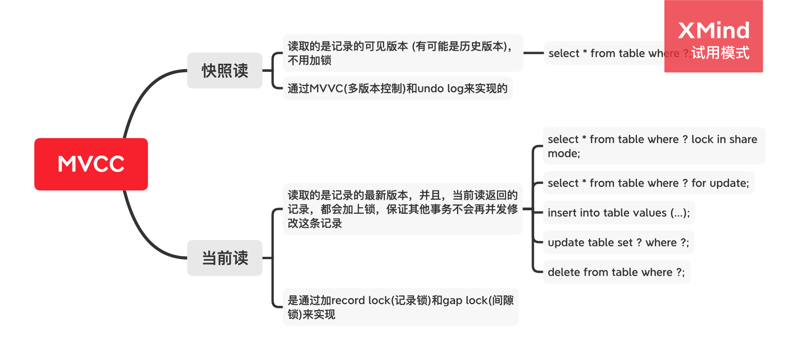<br><a href="MVCC.xmind">MVCC.xmind</a></p>
<p>如果同时看 MVCC 和锁，则会得到这幅图：</p>
<p>!(innodb-隔离级别.png)[innodb-隔离级别.png]</p>
<h2 id="MVCC在MySQL的InnoDB中的实现"><a href="#MVCC在MySQL的InnoDB中的实现" class="headerlink" title="MVCC在MySQL的InnoDB中的实现"></a>MVCC在MySQL的InnoDB中的实现</h2><p>MVCC 的多版本，就是乐观锁。每一行记录都有两个隐藏的版本列，一列记录创建这列的事务版本号，另一列记录删除这列的事务版本号。</p>
<ul>
<li>SELECT时，读取创建版本号&lt;=当前事务版本号（不是已读未提交），删除版本号为空或&gt;当前事务版本号（不是已删除）。</li>
<li>INSERT时，保存当前事务版本号为行的创建版本号。</li>
<li>DELETE时，保存当前事务版本号为行的删除版本号</li>
<li>UPDATE时，插入一条新纪录，保存当前事务版本号为行创建版本号，同时保存当前事务版本号到原来删除的行（隐藏了一个新老交替的软删除，update = insert + delete）。</li>
</ul>
<p>transaction version over row version。</p>
<h2 id="用-read-view-来看-MVCC"><a href="#用-read-view-来看-MVCC" class="headerlink" title="用 read-view 来看 MVCC"></a>用 read-view 来看 MVCC</h2><p>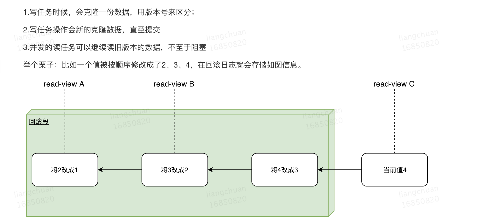</p>
<p>长事务意味着系统里面会存在很老的事务视图，在这个事务提交之前，回滚记录都要保留，这会导致大量占用存储空间。</p>
<p>除此之外，长事务还占用锁资源，可能会拖垮库。</p>
<h1 id="自增锁的细节"><a href="#自增锁的细节" class="headerlink" title="自增锁的细节"></a>自增锁的细节</h1><p>是特殊的表级别锁，专门针对事务插入 AUTO_INCREMENT 类型的列。</p>
<p>原理：每张表自增长值并不保存在磁盘上进行持久化，而是每次InnoDB存储引擎启动时，执行以下操作：</p>
<pre class="line-numbers language-sql"><code class="language-sql"><span class="token keyword">SELECT</span> <span class="token function">MAX</span><span class="token punctuation">(</span>auto_inc_col<span class="token punctuation">)</span> <span class="token keyword">FROM</span> T <span class="token keyword">FOR</span> <span class="token keyword">UPDATE</span><span class="token punctuation">;</span>
<span aria-hidden="true" class="line-numbers-rows"><span></span></span></code></pre>
<p>之后得到的值会用变量 auto_inc_lock 作缓存，插入操作会根据这个自增长值加1赋予自增长列。因为每张表只有同一时刻只能有一个自增锁，可以避免同一表锁对象在各个事务中不断地被申请。</p>
<p><strong>自增主键不一定连续</strong>，因为自增锁不能保证自增主键真正连续。</p>
<p>这里我们可以做个实验，假设 Test 表有主键id和唯一索引列a，已经有了(1,1)这条记录</p>
<p>1.先插入一行(null,1)</p>
<p>2.InnoDB发现用户没有指定自增id，获取当前自增值2</p>
<p>3.将传入的值改成(2,1)</p>
<p>4.将表自增id改成3</p>
<p>5.继续执行插入(2,1)，由于已经存在a=1，所以报 Duplicate key error</p>
<p>为了提高插入的性能，在 MySQL5.1 版本之后，对于普通的 insert 语句，自增锁每次申请完马上释放，不是在一个事务完成后才释放，以便允许别的事务再次申请。</p>
<h1 id="两阶段锁"><a href="#两阶段锁" class="headerlink" title="两阶段锁"></a>两阶段锁</h1><p>传统RDBMS加锁的一个原则，就是 2PL (二阶段锁)：Two-Phase Locking。相对而言，2PL 比较容易理解，说的是锁操作分为两个阶段：加锁阶段与解锁阶段，并且保证加锁阶段与解锁阶段不相交。</p>
<p>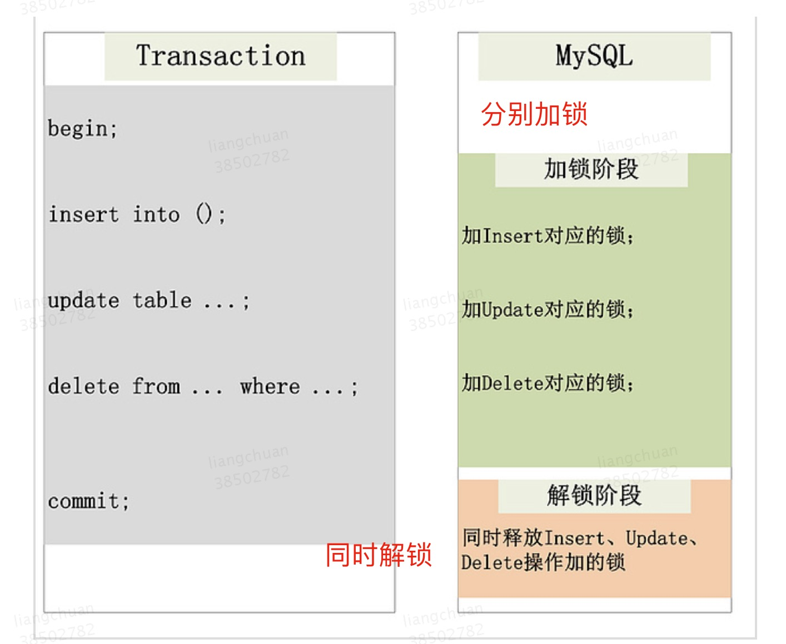</p>
<p>可以看出，每个加锁是在单行语句执行的时候加上的，但解锁是事务提交的时候执行的。</p>
<p>两段锁协议可以保证事务的并发调度是串行化（串行化很重要，尤其是在数据恢复和备份的时候）的。</p>
<p>两段式加锁可以使用无意的 update 直接触发 gap-lock，进而 block 掉其他事务的 insert，见 <a href="https://tech.meituan.com/2014/08/20/innodb-lock.html" target="_blank" rel="noopener">Next-Key 锁的例子</a>。</p>
<p>2PL 锁有例外：</p>
<ul>
<li>自增锁不会等到事务结束就放锁。</li>
<li>semi-consistent 事务会在判定不需要锁定的记录（比如不符合查询条件的记录）上提前释放锁，而不必等到事务提交。</li>
</ul>
<h1 id="锁的实战"><a href="#锁的实战" class="headerlink" title="锁的实战"></a>锁的实战</h1><h2 id="SQL1：select-from-t1-where-id-10"><a href="#SQL1：select-from-t1-where-id-10" class="headerlink" title="SQL1：select * from t1 where id = 10;"></a>SQL1：select * from t1 where id = 10;</h2><p>不加锁。因为MySQL是使用多版本并发控制的，读不加锁。</p>
<p>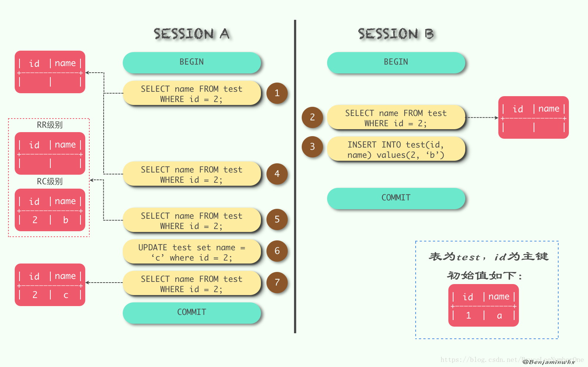</p>
<h2 id="SQL2：delete-from-t1-where-id-10"><a href="#SQL2：delete-from-t1-where-id-10" class="headerlink" title="SQL2：delete from t1 where id = 10;"></a>SQL2：delete from t1 where id = 10;</h2><p>这个问题没有简单答案，真正加锁的顺序，取决于“where 涉及的列 + 隔离级别的组合关系”。</p>
<p>在 RC 的隔离级别之下：</p>
<ul>
<li>如果 id 是主键，update 不会回表，所以只要在行上加 record-lock 即可。</li>
</ul>
<p>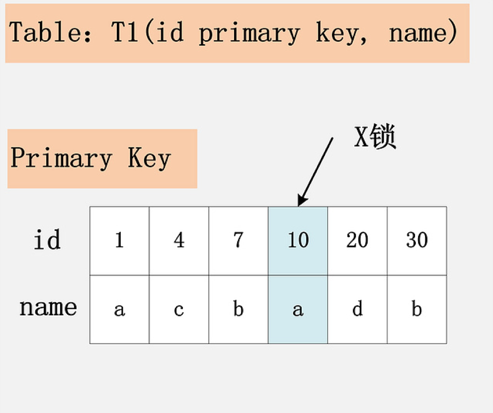</p>
<ul>
<li>若id列是unique列，其上有unique索引。那么SQL需要加两个X锁，一个对应于id unique索引上的id = 10的记录，另一把锁对应于聚簇索引上的[name=’d’,id=10]的记录。为什么聚簇索引上的记录也要加锁？试想一下，如果并发的一个SQL，是通过主键索引来更新：update t1 set id = 100 where name = ‘d’; 此时，如果delete语句没有将主键索引上的记录加锁，那么并发的update就会感知不到delete语句的存在，违背了同一记录上的更新/删除需要串行执行的约束。- <strong>锁就要锁到底，把相关索引都锁住。索引本身即锁。</strong></li>
</ul>
<p>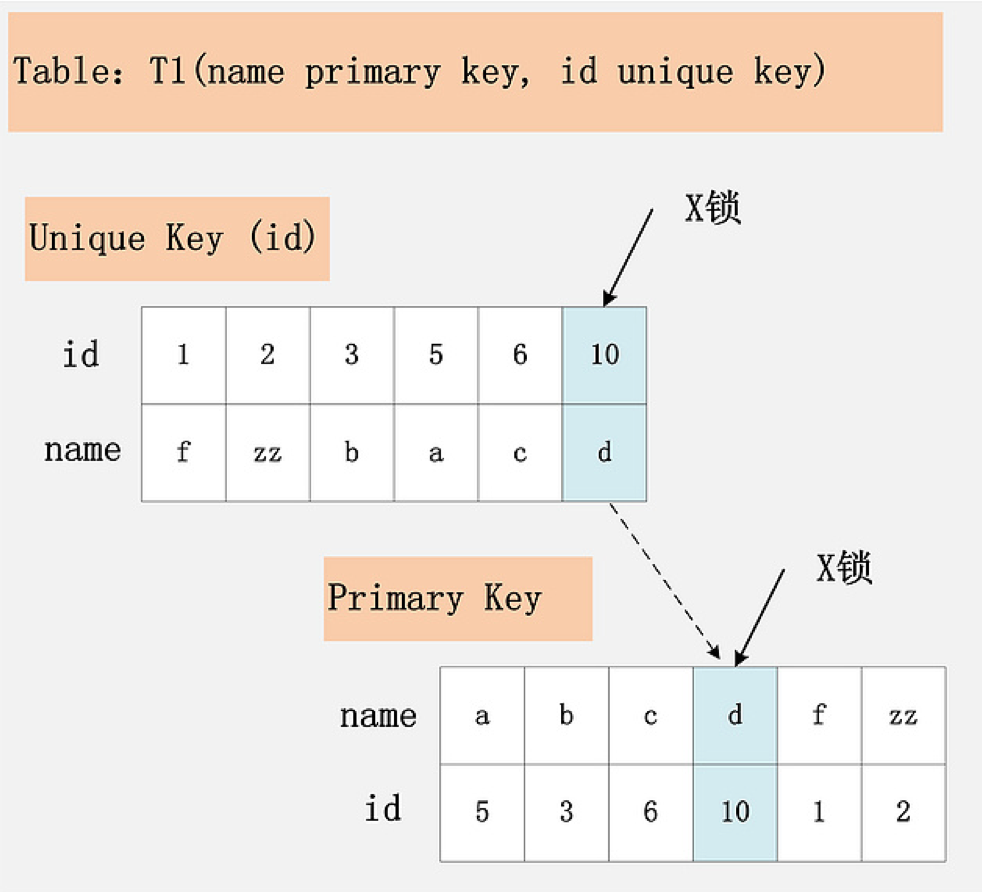</p>
<ul>
<li>若id列上有非唯一索引，那么对应的所有满足SQL查询条件的记录，都会被加锁。同时，这些记录在主键索引上的记录，也会被加锁。</li>
</ul>
<p>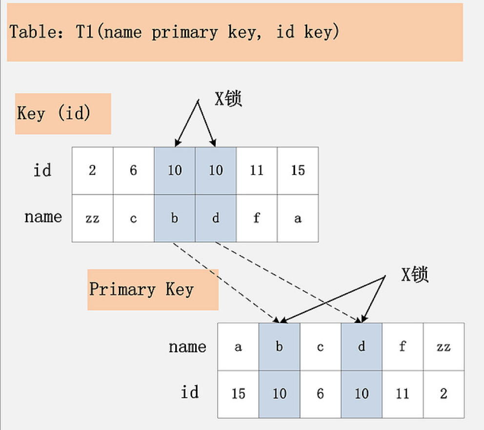</p>
<ul>
<li>若 id列上没有索引，只能走聚簇索引，进行全部扫描。从图中可以看到，满足删除条件的记录有两条，但是，聚簇索引上所有的记录，都被加上了X锁。无论记录是否满足条件，全部被加上X锁。既不是加表锁，也不是在满足条件的记录上加行锁。为什么不是只在满足条件的记录上加锁呢？这是由于MySQL的实现决定的。<strong>如果一个条件无法通过索引快速过滤，那么存储引擎层面就会将所有记录加锁后返回，然后由MySQL Server层进行过滤</strong>。因此也就把所有的记录，都锁上了。注：在实际的实现中，MySQL有一些改进，在MySQL Server过滤条件，发现不满足后，会调用unlock_row方法，<strong>把不满足条件的记录放锁 (违背了2PL的约束)</strong>。这样做，保证了最后只会持有满足条件记录上的锁，但是每条记录的加锁操作还是不能省略的。也就是说，最终长期锁定的行，还是少数。</li>
</ul>
<p>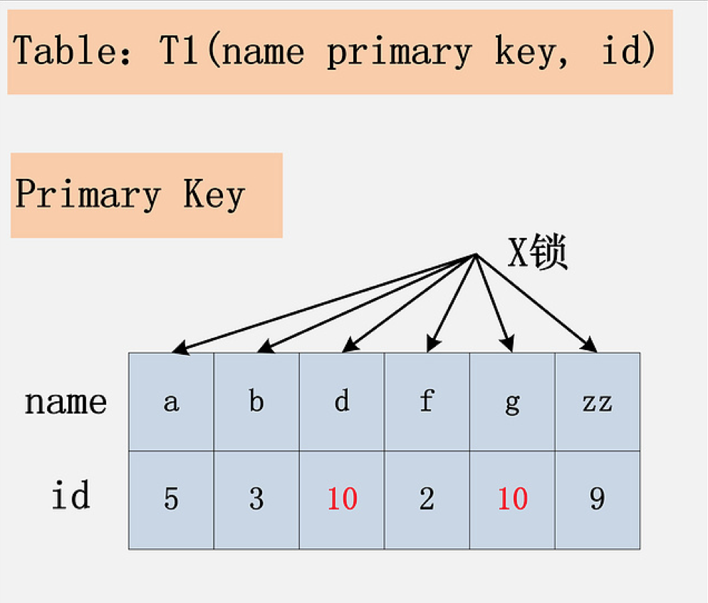</p>
<p>在 RR 的隔离级别之下：</p>
<ul>
<li>id 主键，x 锁锁定一行记录。</li>
<li>id 唯一索引，x 锁锁定唯一索引上的记录，对应的聚簇索引上的记录一个。</li>
<li>id 非唯一索引，则同时加上 record-lock + gap-lock。</li>
</ul>
<p>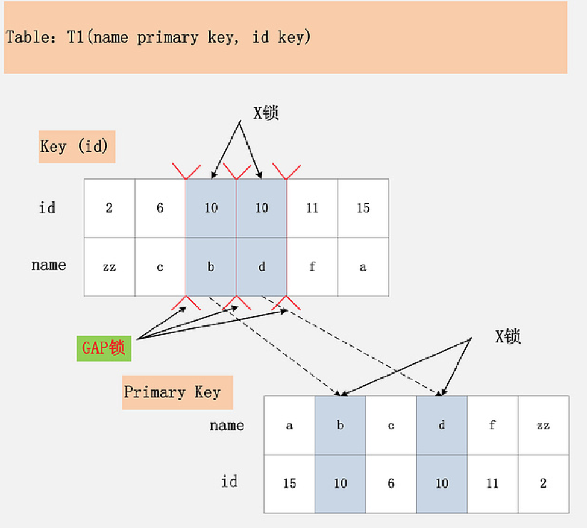</p>
<p>GAP锁有何用？</p>
<p>其实这个多出来的GAP锁，就是RR隔离级别，相对于RC隔离级别，不会出现幻读的关键。确实，GAP锁锁住的位置，也不是记录本身，而是两条记录之间的GAP。所谓幻读，就是同一个事务，连续做两次当前读 (例如：select * from t1 where id = 10 for update;)，那么这两次当前读返回的是完全相同的记录 (记录数量一致，记录本身也一致)，第二次的当前读，不会比第一次返回更多的记录 (幻象)。</p>
<p>如何保证两次当前读返回一致的记录，那就需要在第一次当前读与第二次当前读之间，其他的事务不会插入新的满足条件的记录并提交。为了实现这个功能，GAP锁应运而生。</p>
<p>如图中所示，有哪些位置可以插入新的满足条件的项 (id = 10)，考虑到B+树索引的有序性，满足条件的项一定是连续存放的。记录[6,c]之前，不会插入id=10的记录；[6,c]与[10,b]间可以插入[10, aa]；[10,b]与[10,d]间，可以插入新的[10,bb],[10,c]等；[10,d]与[11,f]间可以插入满足条件的[10,e],[10,z]等；而[11,f]之后也不会插入满足条件的记录。因此，为了保证[6,c]与[10,b]间，[10,b]与[10,d]间，[10,d]与[11,f]不会插入新的满足条件的记录，MySQL选择了用GAP锁，将这三个GAP给锁起来。</p>
<p>此外，在 RR 下，索引的 gap lock 的范围，如果查不到相关记录，也会锁定特定的范围：</p>
<ol>
<li>索引上的等值查询，给唯一索引加锁的时候，next-key lock退化为记录锁。</li>
<li>索引上的等值查询，向右遍历到最后一个不满足等值条件的节点时候，退化为间隙锁。</li>
</ol>
<ul>
<li>id 无索引</li>
</ul>
<p>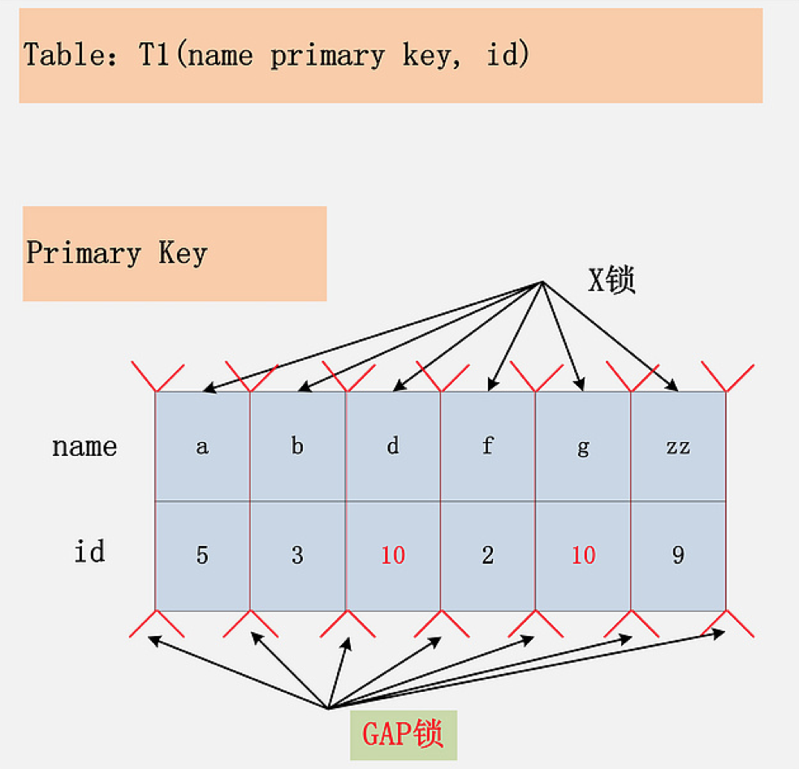</p>
<p>如图，这是一个很恐怖的现象。首先，聚簇索引上的所有记录，都被加上了X锁。其次，聚簇索引每条记录间的间隙(GAP)，也同时被加上了GAP锁。这个示例表，只有6条记录，一共需要6个记录锁，7个GAP锁。试想，如果表上有1000万条记录呢？现实之中出现的过类似的 bug，支付服务因为触发全表间隙锁，导致了 insert 语句不能执行。</p>
<p>在这种情况下，这个表上，除了不加锁的快照读，其他任何加锁的并发SQL，均不能执行，不能更新，不能删除，不能插入，全表被锁死。</p>
<p>当然，跟组合四：[id无索引, Read Committed]类似，这个情况下，MySQL也做了一些优化，就是所谓的semi-consistent read。semi-consistent read开启的情况下，对于不满足查询条件的记录，MySQL会提前放锁。针对上面的这个用例，就是除了记录[d,10]，[g,10]之外，所有的记录锁都会被释放，同时不加GAP锁。semi-consistent read如何触发：要么是read committed隔离级别；要么是Repeatable Read隔离级别，同时设置了 innodb_locks_unsafe_for_binlog 参数。更详细的关于semi-consistent read的介绍，可参考：MySQL+InnoDB semi-consitent read原理及实现分析。</p>
<p>结论：</p>
<ul>
<li>索引越精细加锁越少，索引不精细可能锁表。</li>
<li>在 RR 的级别下，只要是涉及任何写操作的 dml，如果涉及非唯一的索引（不管是不是主键），都会防止幻读而插入 Next-Key—Lock。</li>
<li>大范围的间隙锁会导致大范围的插入失败 - 事务一定要释放，2PL 产生的死锁不可忽略。</li>
<li>在MySQL/InnoDB中，所谓的读不加锁，并不适用于所有的情况，而是隔离级别相关的。Serializable 隔离级别，读不加锁就不再成立，所有的读操作，都是当前读。</li>
<li>索引上 GAP lock 的实际 x-lock 锁定范围，是索引里面命中的 index filter 的 range。</li>
<li>而记录上 record-lock 的锁定范围，则由回表以后定位到的 record 确定。</li>
</ul>
<h2 id="SQL3"><a href="#SQL3" class="headerlink" title="SQL3"></a>SQL3</h2><p>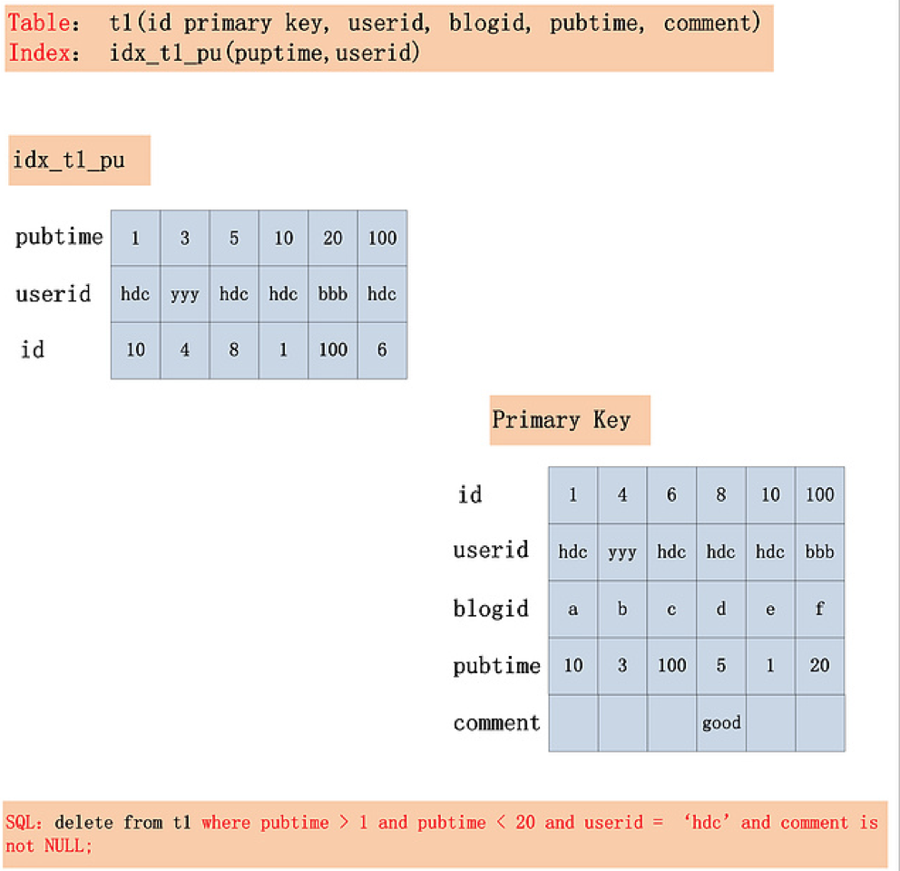<br>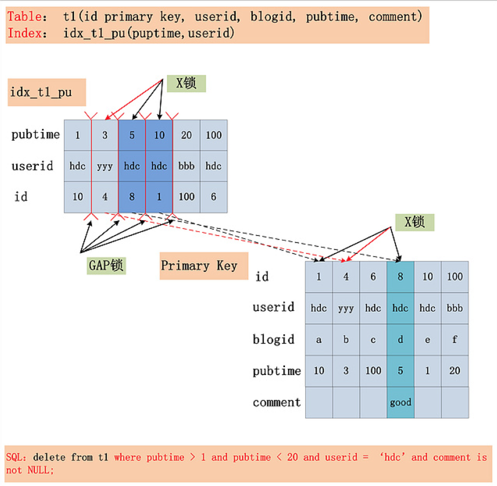</p>
<p>从图中可以看出，在Repeatable Read隔离级别下，由Index Key所确定的范围，被加上了GAP锁；Index Filter 锁给定的条件 (userid = ‘hdc’)何时过滤，视MySQL的版本而定，在MySQL 5.6版本之前，不支持Index Condition Pushdown(ICP)，因此Index Filter在MySQL Server层过滤；在5.6后支持了Index Condition Pushdown，则在index上读取数据后到引擎层进行过滤（也就是说现代版本的 MySQL 能让 index 过滤条件之外的 where 语句也可以在存储引擎层执行）。若不支持ICP，不满足Index Filter的记录，也需要加上记录X锁，若支持ICP，则不满足Index Filter的记录，无需加记录X锁 (图中，用红色箭头标出的X锁，是否要加，视是否支持ICP而定)；而Table Filter对应的过滤条件，则在聚簇索引中读取后，在MySQL Server层面过滤，因此聚簇索引上也需要X锁。最后，选取出了一条满足条件的记录[8,hdc,d,5,good]，但是加锁的数量，要远远大于满足条件的记录数量。</p>
<p>Using index condition是MySQL 5.6中引入的一种新特性，叫做Index Condition Pushdown(ICP)，是一种在存储引擎层使用索引过滤数据的一种优化方式。这里的“下推” 是指将原来在server层进行的table filter中可以进行index filter的部分，在引擎层面使用index filter进行处理，不再需要回表进行table filter。使用ICP可以减少存储引擎层返回需要被index filter过滤掉的行记录，省去了存储引擎访问基表的次数以及MySQL服务器访问存储引擎的次数。Using index condition仅适用于二级索引，一般发生在查询字段无法被二级索引覆盖的场景，该场景下往往需要回表。通过ICP，可以减少存储引擎返回的行记录，从而减少了IO操作。</p>
<p>结论：在Repeatable Read隔离级别下，针对一个复杂的SQL，首先需要提取其where条件。Index Key 确定的范围，需要加上 GAP 锁；Index Filter过滤条件，视MySQL版本是否支持ICP，若支持ICP，则不满足 Index Filter 的记录，不加X锁，否则需要X锁；Table Filter过滤条件，无论是否满足，都需要加X锁。</p>
<h1 id="死锁"><a href="#死锁" class="headerlink" title="死锁"></a>死锁</h1><h2 id="死锁的原理"><a href="#死锁的原理" class="headerlink" title="死锁的原理"></a>死锁的原理</h2><p>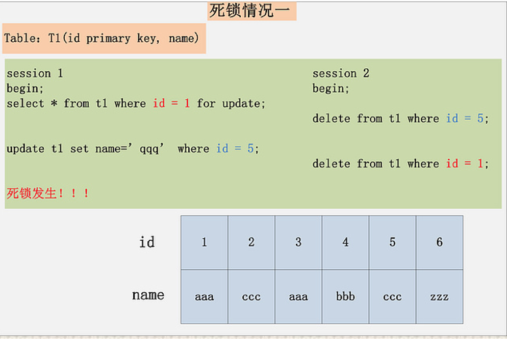</p>
<p>注意回顾两阶段加锁的原理，可以看到逆序加锁就会发生死锁。</p>
<p>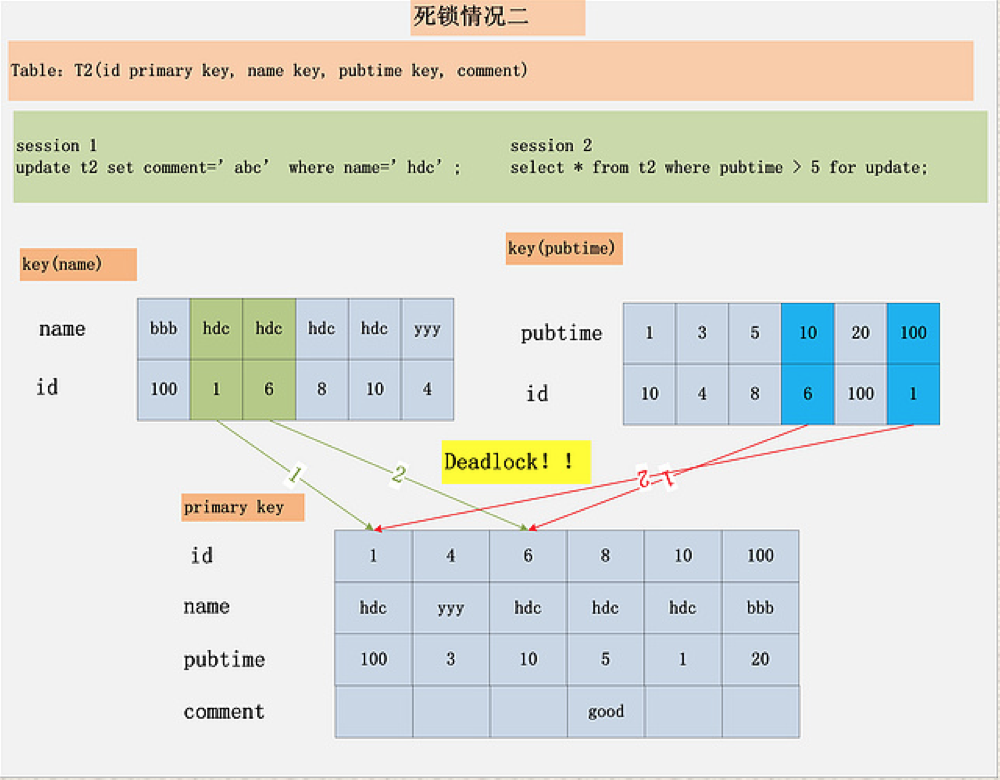</p>
<p>第二个用例，虽然每个Session都只有一条语句，仍旧会产生死锁。要分析这个死锁，首先必须用到本文前面提到的MySQL加锁的规则。针对Session 1，从name索引出发，读到的[hdc, 1]，[hdc, 6]均满足条件，不仅会加name索引上的记录X锁，而且会加聚簇索引上的记录X锁，加锁顺序为先[1,hdc,100]，后[6,hdc,10]。而Session 2，从pubtime索引出发，[10,6],[100,1]均满足过滤条件，同样也会加聚簇索引上的记录X锁，加锁顺序为[6,hdc,10]，后[1,hdc,100]。发现没有，跟Session 1的加锁顺序正好相反，如果两个Session恰好都持有了第一把锁，请求加第二把锁，死锁就发生了。即索引的锁交叉了，但聚簇索引（记录）上的锁却冲突了（<strong>如果持有锁的事务总不 commit，则因为 2PL 的存在，死锁必然发生</strong>）。为了预防死锁，一般应用中推荐使用一次封锁法，就是在方法的开始阶段，已经预先知道会用到哪些数据，然后全部锁住，在方法运行之后，再全部解锁。这种方式可以有效的避免循环死锁，但在数据库中却不适用，因为在事务开始阶段，数据库并不知道会用到哪些数据。这就会导致问题 2。</p>
<h2 id="死锁的结论"><a href="#死锁的结论" class="headerlink" title="死锁的结论"></a>死锁的结论</h2><p>死锁的发生与否，并不在于事务中有多少条SQL语句，死锁的关键在于：两个(或以上)的Session加锁的顺序不一致。而使用本文上面提到的，分析MySQL每条SQL语句的加锁规则，分析出每条语句的加锁顺序，然后检查多个并发SQL间是否存在以相反的顺序加锁的情况，就可以分析出各种潜在的死锁情况，也可以分析出线上死锁发生的原因。</p>
<h2 id="避免死锁有哪些方法"><a href="#避免死锁有哪些方法" class="headerlink" title="避免死锁有哪些方法"></a>避免死锁有哪些方法</h2><ul>
<li>引入死锁告警，在触发死锁的时候及时发现，调整事务的执行策略。</li>
<li>以固定的顺序访问表和行。</li>
<li>大事务拆小。大事务更容易发生死锁，如果业务允许，将大事务拆小。</li>
<li>在同一个事务中，尽可能做到一次锁定所需要的所有资源，减少死锁概率。</li>
<li>降低隔离级别。如果业务允许，将隔离级别调低也是较好的选择，比如将隔离级别从RR调整为RC，可以避免掉很多因为gap锁造成的死锁（<strong>RC 连 gap 都没有，只有 record-lock</strong>）。</li>
<li>为表添加合理的索引-否则在 InnoDB 存储引擎层会锁全表（即使没有加上表锁，所有的间隙都加上 gap-lock，所有的行都加上 record-lock，都是不好对付的）。</li>
<li>事务要加上超时，业务重试的超时时长也要做好匹配的超时设计，否则任务重试（重复执行任务或者重复消费 mq 消息），都会导致同样的任务重复地开启同样的事务，导致同一个事务的执行流程彼此引起死锁。</li>
<li>如果有得选，必须先进行 select，至少确认一个 id 是存在的，再调用 update 或者 delete，避免触发大范围的全表锁定。如果不这样做，<a href="https://www.jianshu.com/p/f8495015dace" target="_blank" rel="noopener">可能触发 IX 兼容但 X LOCK 和 IX 不兼容的死锁问题</a>。</li>
<li>客户端需要保证异常处理机制，确保事务完成提交。</li>
<li>如果你的事务中需要锁多个行，要把最可能造成锁冲突、最可能影响并发度的锁尽量往后放。- 用另一种思路来看，先锁最容易引起冲突的行，可以直接把不相关的操作拒之门外，也是一种简洁的思路。</li>
</ul>
<h2 id="insert-引发的死锁"><a href="#insert-引发的死锁" class="headerlink" title="insert 引发的死锁"></a>insert 引发的死锁</h2><p>插入操作是不会主动加显示的X Record锁，只有检测到Key冲突的时候才会把隐式锁转为显式锁。</p>
<p>S1插入记录，S2插入同一条记录，主键冲突，S2将S1的隐式锁转为显式锁，同时S2向锁队列中加入一个S Record锁请求，S3同样也加入一个S Record锁请求；当S1回滚后，S2和S3获得S Record锁，但随后S2和S3又先后请求X GAP Insert Intention插入意向锁，因此锁队列为： S2(S GAP)&lt;—S3(S GAP)&lt;—S2(X GAP Insert Intention)&lt;–S3(X GAP Insert Intention)   S3, S2, S3形成死锁。</p>
<h1 id="锁状态"><a href="#锁状态" class="headerlink" title="锁状态"></a>锁状态</h1><p>了解了死锁产生的原因，如何知道数据库当前锁的状态呢？如何查看死锁情况呢？</p>
<p>目前在MySQL中锁相关的视图如下：</p>
<p>information_schema.innodb_trx ：记录事务相关的信息，包括事务开始时间、事务SQL、事务权重（死锁发生时，回滚事务参考的权值）等</p>
<p>information_schema.innodb_locks：记录事务持有锁的信息，包括事务持有的锁类型、被锁的表等</p>
<p>infomation_schema.innodb_lock_waits：记录事务等待情况，每个事务被哪些事务所阻塞</p>
<p>死锁情况可通过<a href="https://blog.csdn.net/dhfzhishi/article/details/81272360" target="_blank" rel="noopener">show engine innodb status查看</a>。</p>

      
    </div>
    <footer class="article-footer">
      <a data-url="http://yoursite.com/2020/07/19/MySQL-的隔离级别和锁/" data-id="ckkza0zyv00c3kea1lc3e3sii" class="article-share-link">分享</a>
      
      
      
  <ul class="article-tag-list"><li class="article-tag-list-item"><a class="article-tag-list-link" href="/tags/MySQL/">MySQL</a></li><li class="article-tag-list-item"><a class="article-tag-list-link" href="/tags/数据库/">数据库</a></li></ul>

    </footer>
  </div>
  
    
 <script src="/jquery/jquery.min.js"></script>
  <div id="random_posts">
    <h2>推荐文章</h2>
    <div class="random_posts_ul">
      <script>
          var random_count =4
          var site = {BASE_URI:'/'};
          function load_random_posts(obj) {
              var arr=site.posts;
              if (!obj) return;
              // var count = $(obj).attr('data-count') || 6;
              for (var i, tmp, n = arr.length; n; i = Math.floor(Math.random() * n), tmp = arr[--n], arr[n] = arr[i], arr[i] = tmp);
              arr = arr.slice(0, random_count);
              var html = '<ul>';
            
              for(var j=0;j<arr.length;j++){
                var item=arr[j];
                html += '<li><strong>' + 
                item.date + ':&nbsp;&nbsp;<a href="' + (site.BASE_URI+item.uri) + '">' + 
                (item.title || item.uri) + '</a></strong>';
                if(item.excerpt){
                  html +='<div class="post-excerpt">'+item.excerpt+'</div>';
                }
                html +='</li>';
                
              }
              $(obj).html(html + '</ul>');
          }
          $('.random_posts_ul').each(function () {
              var c = this;
              if (!site.posts || !site.posts.length){
                  $.getJSON(site.BASE_URI + 'js/posts.js',function(json){site.posts = json;load_random_posts(c)});
              } 
               else{
                load_random_posts(c);
              }
          });
      </script>
    </div>
  </div>

    
<nav id="article-nav">
  
    <a href="/2020/07/20/MySQL-中的日志/" id="article-nav-newer" class="article-nav-link-wrap">
      <strong class="article-nav-caption">上一篇</strong>
      <div class="article-nav-title">
        
          MySQL 中的日志
        
      </div>
    </a>
  
  
    <a href="/2020/07/19/Spring-IOC/" id="article-nav-older" class="article-nav-link-wrap">
      <strong class="article-nav-caption">下一篇</strong>
      <div class="article-nav-title">Spring IOC</div>
    </a>
  
</nav>

  
</article>
 
     
  <div class="comments" id="comments">
    
     
       
      <div id="cloud-tie-wrapper" class="cloud-tie-wrapper"></div>
    
       
      
      
  </div>
 
  

</section>
           
    <aside id="sidebar">
  
    

  
    
    <div class="widget-wrap">
    
      <div class="widget" id="toc-widget-fixed">
      
        <strong class="toc-title">文章目录</strong>
        <div class="toc-widget-list">
              <ol class="toc"><li class="toc-item toc-level-1"><a class="toc-link" href="#数据库的隔离级别"><span class="toc-number">1.</span> <span class="toc-text">数据库的隔离级别</span></a><ol class="toc-child"><li class="toc-item toc-level-2"><a class="toc-link" href="#可读未提交-Read-Uncommitted"><span class="toc-number">1.1.</span> <span class="toc-text">可读未提交 Read Uncommitted</span></a></li><li class="toc-item toc-level-2"><a class="toc-link" href="#可读已提交"><span class="toc-number">1.2.</span> <span class="toc-text">可读已提交</span></a></li><li class="toc-item toc-level-2"><a class="toc-link" href="#可重复读"><span class="toc-number">1.3.</span> <span class="toc-text">可重复读</span></a></li><li class="toc-item toc-level-2"><a class="toc-link" href="#序列化"><span class="toc-number">1.4.</span> <span class="toc-text">序列化</span></a></li><li class="toc-item toc-level-2"><a class="toc-link" href="#默认隔离级别"><span class="toc-number">1.5.</span> <span class="toc-text">默认隔离级别</span></a></li></ol></li><li class="toc-item toc-level-1"><a class="toc-link" href="#MySQL-的锁"><span class="toc-number">2.</span> <span class="toc-text">MySQL 的锁</span></a><ol class="toc-child"><li class="toc-item toc-level-2"><a class="toc-link" href="#Lock-和-Latch"><span class="toc-number">2.1.</span> <span class="toc-text">Lock 和 Latch</span></a></li><li class="toc-item toc-level-2"><a class="toc-link" href="#锁的颗粒度"><span class="toc-number">2.2.</span> <span class="toc-text">锁的颗粒度</span></a></li><li class="toc-item toc-level-2"><a class="toc-link" href="#意向锁"><span class="toc-number">2.3.</span> <span class="toc-text">意向锁</span></a></li><li class="toc-item toc-level-2"><a class="toc-link" href="#S-锁、X-锁"><span class="toc-number">2.4.</span> <span class="toc-text">S 锁、X 锁</span></a></li><li class="toc-item toc-level-2"><a class="toc-link" href="#锁的兼容性（compatibility）"><span class="toc-number">2.5.</span> <span class="toc-text">锁的兼容性（compatibility）</span></a></li></ol></li><li class="toc-item toc-level-1"><a class="toc-link" href="#MVCC"><span class="toc-number">3.</span> <span class="toc-text">MVCC</span></a><ol class="toc-child"><li class="toc-item toc-level-2"><a class="toc-link" href="#mvcc-与语句之间的关系"><span class="toc-number">3.1.</span> <span class="toc-text">mvcc 与语句之间的关系</span></a></li><li class="toc-item toc-level-2"><a class="toc-link" href="#MVCC在MySQL的InnoDB中的实现"><span class="toc-number">3.2.</span> <span class="toc-text">MVCC在MySQL的InnoDB中的实现</span></a></li><li class="toc-item toc-level-2"><a class="toc-link" href="#用-read-view-来看-MVCC"><span class="toc-number">3.3.</span> <span class="toc-text">用 read-view 来看 MVCC</span></a></li></ol></li><li class="toc-item toc-level-1"><a class="toc-link" href="#自增锁的细节"><span class="toc-number">4.</span> <span class="toc-text">自增锁的细节</span></a></li><li class="toc-item toc-level-1"><a class="toc-link" href="#两阶段锁"><span class="toc-number">5.</span> <span class="toc-text">两阶段锁</span></a></li><li class="toc-item toc-level-1"><a class="toc-link" href="#锁的实战"><span class="toc-number">6.</span> <span class="toc-text">锁的实战</span></a><ol class="toc-child"><li class="toc-item toc-level-2"><a class="toc-link" href="#SQL1：select-from-t1-where-id-10"><span class="toc-number">6.1.</span> <span class="toc-text">SQL1：select * from t1 where id = 10;</span></a></li><li class="toc-item toc-level-2"><a class="toc-link" href="#SQL2：delete-from-t1-where-id-10"><span class="toc-number">6.2.</span> <span class="toc-text">SQL2：delete from t1 where id = 10;</span></a></li><li class="toc-item toc-level-2"><a class="toc-link" href="#SQL3"><span class="toc-number">6.3.</span> <span class="toc-text">SQL3</span></a></li></ol></li><li class="toc-item toc-level-1"><a class="toc-link" href="#死锁"><span class="toc-number">7.</span> <span class="toc-text">死锁</span></a><ol class="toc-child"><li class="toc-item toc-level-2"><a class="toc-link" href="#死锁的原理"><span class="toc-number">7.1.</span> <span class="toc-text">死锁的原理</span></a></li><li class="toc-item toc-level-2"><a class="toc-link" href="#死锁的结论"><span class="toc-number">7.2.</span> <span class="toc-text">死锁的结论</span></a></li><li class="toc-item toc-level-2"><a class="toc-link" href="#避免死锁有哪些方法"><span class="toc-number">7.3.</span> <span class="toc-text">避免死锁有哪些方法</span></a></li><li class="toc-item toc-level-2"><a class="toc-link" href="#insert-引发的死锁"><span class="toc-number">7.4.</span> <span class="toc-text">insert 引发的死锁</span></a></li></ol></li><li class="toc-item toc-level-1"><a class="toc-link" href="#锁状态"><span class="toc-number">8.</span> <span class="toc-text">锁状态</span></a></li></ol>
          </div>
      </div>
    </div>

  
    

  
    
  
    
  
    

  
    
  
    <!--微信公众号二维码-->


  
</aside>

      </div>
      <footer id="footer">
  
  <div class="outer">
    <div id="footer-left">
      &copy; 2014 - 2021 magicliang&nbsp;|&nbsp;
      主题 <a href="https://github.com/giscafer/hexo-theme-cafe/" target="_blank">Cafe</a>
    </div>
     <div id="footer-right">
      联系方式&nbsp;|&nbsp;magicliang@qq.com
    </div>
  </div>
</footer>
 <script src="/jquery/jquery.min.js"></script>
    </div>
    <nav id="mobile-nav">
  
    <a href="/" class="mobile-nav-link">首页</a>
  
    <a href="/archives" class="mobile-nav-link">归档</a>
  
    <a href="/about" class="mobile-nav-link">关于</a>
  
</nav>
    
<script>
// Elevator script included on the page, already.
window.onload = function() {
  var elevator = new Elevator({
    selector:'.back-to-top-btn',
    element: document.querySelector('.back-to-top-btn'),
    duration: 1000 // milliseconds
  });
}
</script>
      

  
    <script>
      var cloudTieConfig = {
        url: document.location.href, 
        sourceId: "",
        productKey: "e2fb4051c49842688ce669e634bc983f",
        target: "cloud-tie-wrapper"
      };
    </script>
    <script src="https://img1.ws.126.net/f2e/tie/yun/sdk/loader.js"></script>
    

  


<!-- author:forvoid begin -->
<!-- author:forvoid begin -->

<!-- author:forvoid end -->

<!-- author:forvoid end -->


  
    <script type="text/x-mathjax-config">
      MathJax.Hub.Config({
        tex2jax: {
          inlineMath: [ ['$','$'], ["\\(","\\)"]  ],
          processEscapes: true,
          skipTags: ['script', 'noscript', 'style', 'textarea', 'pre', 'code']
        }
      })
    </script>

    <script type="text/x-mathjax-config">
      MathJax.Hub.Queue(function() {
        var all = MathJax.Hub.getAllJax(), i;
        for (i=0; i < all.length; i += 1) {
          all[i].SourceElement().parentNode.className += ' has-jax';
        }
      })
    </script>
    <script type="text/javascript" src="https://cdn.rawgit.com/mathjax/MathJax/2.7.1/MathJax.js?config=TeX-AMS-MML_HTMLorMML"></script>
  


 <script src="/js/is.js"></script>


  <link rel="stylesheet" href="/fancybox/jquery.fancybox.css">
  <script src="/fancybox/jquery.fancybox.pack.js"></script>


<script src="/js/script.js"></script>
<script src="/js/elevator.js"></script>
  </div>
</body>
</html>